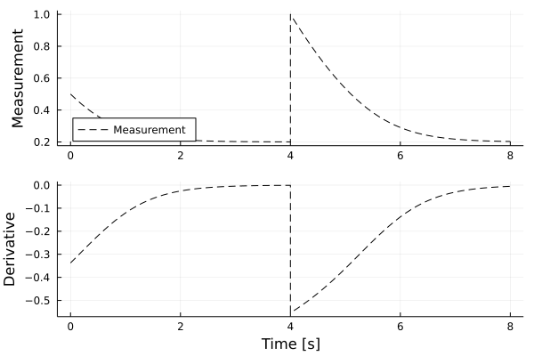
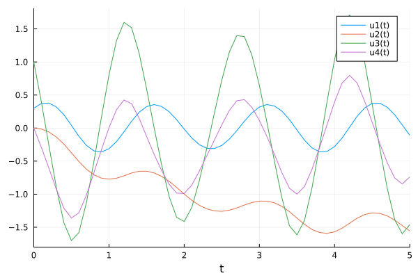

Implicit Systems
This section presents some real world examples of implicit nonlinear dynamics.
Implicit Nonlinear Dynamics : Michaelis Menten
What if you want to estimate an implicitly defined system of the form $f(u_t, u, p, t) = 0$? The solution : Implicit Sparse Identification. This method was originally described in this paper, and currently there exist robust algorithms to identify these systems.
We will focus on Michaelis Menten Kinetics. As before, we will define the DataDrivenProblem and the Basis containing possible candidate functions for our sparse_regression!.
using DataDrivenDiffEq
using LinearAlgebra
using ModelingToolkit
using Plots
using OrdinaryDiffEq
function michaelis_menten(u, p, t)
[0.6 - 1.5u[1]/(0.3+u[1])]
end
u0 = [0.5]
problem_1 = ODEProblem(michaelis_menten, u0, (0.0, 4.0))
solution_1 = solve(problem_1, Tsit5(), saveat = 0.1)
problem_2 = ODEProblem(michaelis_menten, 2*u0, (4.0, 8.0))
solution_2 = solve(problem_2, Tsit5(), saveat = 0.1)
X = [solution_1[:,:] solution_2[:,:]]
ts = [solution_1.t; solution_2.t]
DX = similar(X)
for (i, xi) in enumerate(eachcol(X))
DX[:, i] = michaelis_menten(xi, [], ts[i])
end
prob = ContinuousDataDrivenProblem(X, ts, DX)
@parameters t
D = Differential(t)
@variables u[1:1](t)
h = [monomial_basis(u[1:1], 4)...]
basis = Basis([h; h .* D(u[1])], [u; D(u[1])], iv = t)Model ##Basis#342 with 10 equations
States : u[1](t) Differential(t)(u[1](t))
Independent variable: t
Equations
φ₁ = 1
φ₂ = u[1](t)
φ₃ = u[1](t)^2
φ₄ = u[1](t)^3
...
φ₁₀ = (u[1](t)^4)*Differential(t)(u[1](t))
Next, we define the ImplicitOptimizer and solve the problem.
opt = ImplicitOptimizer(4e-1)
res = solve(prob, basis, opt, normalize = false, denoise = false, maxiter = 1000);Implicit Result
Solution with 1 equations and 4 parameters.
Returncode: success
Sparsity: 4.0
L2 Norm Error: 0.12165324361055346
AICC: 17.215795870781612As we can see, the DataDrivenSolution has good metrics. Furthermore, inspection of the underlying system shows that the original equations have been recovered correctly:
system = result(res);
println(system)Model ##Basis#345 with 1 equations
States : u[1](t) Differential(t)(u[1](t))
Parameters : p[1] p[2] p[3] p[4]
Independent variable: t
Equations
0 = u[1](t)*p[2] + Differential(t)(u[1](t))*p[3] + u[1](t)*Differential(t)(u[1](t))*p[4] + p[1]Right now, Implicit results cannot be simulated without further processing in ModelingToolkit
Implicit Nonlinear Dynamics : Cartpole
The following is another example on how to use the ImplicitOptimizer that is taken from the original paper.
As always, we start by creating a corresponding dataset:
using DataDrivenDiffEq
using ModelingToolkit
using OrdinaryDiffEq
using LinearAlgebra
using Plots
gr()
function cart_pole(u, p, t)
du = similar(u)
F = -0.2 + 0.5*sin(6*t) # the input
du[1] = u[3]
du[2] = u[4]
du[3] = -(19.62*sin(u[1])+sin(u[1])*cos(u[1])*u[3]^2+F*cos(u[1]))/(2-cos(u[1])^2)
du[4] = -(sin(u[1])*u[3]^2 + 9.81*sin(u[1])*cos(u[1])+F)/(2-cos(u[1])^2)
return du
end
u0 = [0.3; 0; 1.0; 0]
tspan = (0.0, 5.0)
dt = 0.1
cart_pole_prob = ODEProblem(cart_pole, u0, tspan)
solution = solve(cart_pole_prob, Tsit5(), saveat = dt)
X = solution[:,:]
DX = similar(X)
for (i, xi) in enumerate(eachcol(X))
DX[:, i] = cart_pole(xi, [], solution.t[i])
end
t = solution.t
ddprob = ContinuousDataDrivenProblem(
X , t, DX = DX[3:4, :], U = (u,p,t) -> [-0.2 + 0.5*sin(6*t)]
)
Next, we define a sufficient Basis:
using Symbolics: scalarize
@variables u[1:4] du[1:2] x[1:1] t
# Right now, we need to scalarize the array expression to combine them
u = scalarize(u)
du = scalarize(du)
x = scalarize(x)
polys = polynomial_basis(u, 2)
push!(polys, sin.(u[1]))
push!(polys, cos.(u[1]))
push!(polys, sin.(u[1])^2)
push!(polys, cos.(u[1])^2)
push!(polys, sin.(u[1]).*u[3:4]...)
push!(polys, sin.(u[1]).*u[3:4].^2...)
push!(polys, sin.(u[1]).*cos.(u[1])...)
push!(polys, sin.(u[1]).*cos.(u[1]).*u[3:4]...)
push!(polys, sin.(u[1]).*cos.(u[1]).*u[3:4].^2...)
implicits = [du; du[1] .* u; du[2] .* u; du .* cos(u[1]); du .* cos(u[1])^2; polys]
push!(implicits, x...)
push!(implicits, x[1]*cos(u[1]))
push!(implicits, x[1]*sin(u[1]))
basis= Basis(implicits, [u; du], controls = x, iv = t);Model ##Basis#349 with 45 equations
States : 6
Independent variable: t
Equations
φ₁ = du[1]
φ₂ = du[2]
φ₃ = du[1]*u[1]
φ₄ = du[1]*u[2]
...
φ₄₅ = sin(u[1])*x[1]We solve the problem by varying over a sufficient set of thresholds for the associated optimizer. Additionally we activate the scale_coefficients option for the ImplicitOptimizer, which helps to find sparse equations by normalizing the resulting coefficient matrix after each suboptimization.
To evaluate the pareto optimal solution, we use the functions f and g which can be passed as keyword arguments into the solve function. f is a function with different signatures for different optimizers, but returns the $L_0$ norm of the coefficients and the $L_2$ error of the current model. g takes this vector and projects it down onto a scalar, using the $L_2$ norm per default. However, here we want to use the AIC of the output of f. A noteworthy exception is of course, that we want only results with two or more active coefficents. Hence, we modify g accordingly.
λ = [1e-4;5e-4;1e-3;2e-3;3e-3;4e-3;5e-3;6e-3;7e-3;8e-3;9e-3;1e-2;2e-2;3e-2;4e-2;5e-2;
6e-2;7e-2;8e-2;9e-2;1e-1;2e-1;3e-1;4e-1;5e-1;6e-1;7e-1;8e-1;9e-1;1;1.5;2;2.5;3;3.5;4;4.5;5;
6;7;8;9;10;20;30;40;50;100;200];
opt = ImplicitOptimizer(λ)
# Compute the AIC
g(x) = x[1] <= 1 ? Inf : 2*x[1]-2*log(x[2])
res = solve(ddprob, basis, opt, du, maxiter = 1000, g = g, scale_coefficients = true)
println(res)
println(result(res))
println(parameter_map(res))Implicit Result
Solution with 2 equations and 10 parameters.
Returncode: success
Sparsity: 10.0
L2 Norm Error: 2.5405970312758556e-15
AICC: 161.1947399284994
Model ##Basis#352 with 2 equations
States : 6
Parameters : 10
Independent variable: t
Equations
0 = sin(u[1])*p[3] + du[1]*p[1] + (cos(u[1])^2)*du[1]*p[2] + cos(u[1])*p[5]*x[1] + (u[3]^2)*cos(u[1])*sin(u[1])*p[4]
0 = du[2]*p[6] + p[10]*x[1] + (cos(u[1])^2)*du[2]*p[7] + (u[3]^2)*sin(u[1])*p[8] + cos(u[1])*sin(u[1])*p[9]
Pair{SymbolicUtils.Term{Real, Base.ImmutableDict{DataType, Any}}, Float64}[p[1] => -1.0, p[2] => 0.5, p[3] => -9.81, p[4] => -0.5, p[5] => -0.5, p[6] => -1.0, p[7] => 0.5, p[8] => -0.5, p[9] => -4.905, p[10] => -0.5]